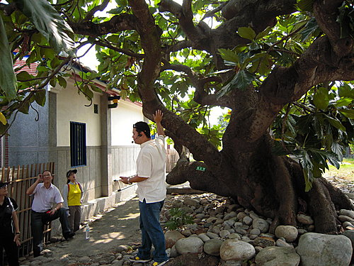
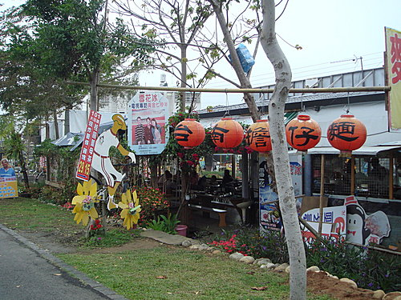

秋高氣爽，真是郊遊踏青的好日子，
自從加入拜客族(biker)後，
秋天就成為騎車趴趴走的最好季節。
近日，
有幸與一群好友同遊東豐鐵馬綠廊，
就讓我們帶妳一同來遨遊吧……..
東豐鐵路綠色走廊是全國第一條由廢棄鐵道
改建為自行車道的腳踏車專用道，
也是全國第二條腳踏車專用道，
全長約 十二公里 ，沿途風光明媚，景色宜人，
除了施設腳踏車專用道外，
並在車道兩旁實施綠美化，
是一條「綠色的大甲溪」，
而與鄰近的藍色大甲溪相互輝映，
除了可提供假日休閒育樂新去處外，
更可舉辦國際性自行車大賽。
這條腳踏車專用道於89年11月15日完工，
成為臺中縣假日休閒新景點。
本團是由東勢客家文物館往豐原騎乘，
去程為下坡路段，卡省力啦。
東豐鐵橋橫越大甲溪，
視野開闊，風光明媚。
↑公司第33期的俊男美女。
↓來自高雄分公司的強棒合影。
百年芒果樹是休憩談心的好所在，
來自高雄的力士----紅中先生。

土牛客家文化館簡介----
劉家老夥房始建於喜慶年間，
係劉氏祖先開基立業之地，
更是山城客家墾拓史的重要象徵。
劉家子孫在此生活二百餘年，
921大地震震碎了劉家伙房，
卻沒有震碎劉家的心，
反驅使他們成立了客家文化館，
充分突顯出「硬頸打拼尋希望」的客家精神。
石岡水壩氣勢雄偉，
景色迷人，值得駐足玩賞。

綠廊的終點----豐原，
有多家簡餐店、租車店，
如意猶未盡，
尚可直接前往后豐鐵鐵道，
繼續前往后里馬場騎乘玩耍。
 急急急~~跪邀您參加文建會『騎小摺瘋台灣．騎福轉運之旅』活動！
急急急~~跪邀您參加文建會『騎小摺瘋台灣．騎福轉運之旅』活動！
懇請您上傳與單車（小摺、公路、小徑、登山、兒童……各種車種皆可）的旅行景點合照，每篇投稿景點過審後可立即獲得 60 點基金（可於文化旅遊網兌獎）外，還有機會再拿到捷安特CHIRON DS1新車（市價48000元）、RICOH相機、LAVOD單車MP3、單車排汗衫…等獎品。
【活動網址】http://tour.cca.gov.tw/frontsite/2009events/bike/index.jsp
【PS#1 第一階段是以「景點」做為評選目標，若您一次踩過好幾個景點，千萬要拆開來投稿，這樣才能痛快賺點數與票數哦】
【PS#2 景點照跟單車合照要不同張哦，單車合照中要有人+車+景三合一的元素(背影遠景都OK，是不是本人無所謂)】
【PS#3 要參加活動的作品，一定要在活動網頁中上傳才能進入票選區；在私房景點頁跟會員中心投稿只能算一般景點哦】
【PS#4 第一階段的景點募集將於12/31投稿截止，1/8票選截止(佔40%，採名次序位乘積)】
在此跟您拜託了~~~（如有可能，也請您向其他朋友宣傳此活動，活動快截止了....）
同樣是一個遊樂景點，透過小獅的介紹，總覺得會特別好玩。當然喔，東豐綠廊道是一個非常值得推薦的景點。我個人都已經去過至少5次了。改天河東獅再一起約騎東豐綠廊道及后豐鐵馬道！